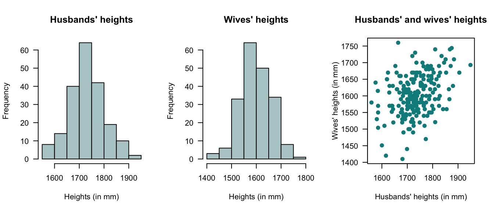

11 Multivariate distributions*
On completion of this chapter you should be able to:
- apply the concept of bivariate random variables.
- compute joint probability functions and the distribution function of two random variables.
- find the marginal and conditional probability functions of random variables in both discrete and continuous cases.
- apply the concept of independence of two random variables.
- compute the expectation and variance of linear combinations of random variables.
- interpret and compute the covariance and the coefficient of correlation between two random variables.
- compute the conditional mean and conditional variance of a random variable for some given value of another random variable.
- use the multinomial and bivariate normal distributions.
11.1 Introduction
Not all random processes are sufficiently simple to have the outcome denoted by a single variable \(X\). Many situations require observing two or more numerical characteristics simultaneously. This chapter mainly discusses the two-variable (bivariate) case, but also discusses the multivariable (more than two variables) case using matrix notation (Sect. 11.2).
11.3 Random vectors
So far, we have studied univariate random variables (i.e., a single random variable) and bivariate random variables (two jointly distributed random variables). These ideas can be extended to more random variables; the case of multivariate random variables, where several random variables are considered simultaneously.
To do this, using random vectors is convenient. A random vector is a column vector of \(n\) random variables: \[ \mathbf{X} = [X_1, X_2, \dots, X_n]^T, \] where the superscript \(T\) means ‘transpose’. Each \(X_i\) is a random variable, and together they form an \(n\)-dimensional random vector. In the bivariate case, for example, we could write \[ \mathbf{X} = \begin{bmatrix} X_1 \\ X_2 \end{bmatrix} \] where the (column) vector \(\mathbf{a} = \begin{bmatrix} a_1 \\ a_2 \end{bmatrix}\).
11.4 Joint probability functions
The joint probability function of \(\mathbf{X}\) describes the probability distribution for all \(n\) random variables simultaneously.
Definition 11.1 (Joint probability function (discrete)) Let \(\mathbf{X} = (X_1, \dots, X_n)\) be an \(n\)-dimensional discrete random variable. The random variable \(X_j\) (for \(j = 1, \dots, n\)) takes values in some set \(S_j\) (the range).
Then, the range of the random vector is \[ \mathcal{X} \subseteq S_1\times \cdots \times S_n. \] Then, the joint probability mass function is \[ p_{X_1, \dots, X_n}(x_1, \dots, x_n) = \Pr(X_1 = x_1,\, \dots,\, X_n = x_n) \quad \text{for $(x_1, \dots, x_n) \in \mathcal{X}$}, \] such that \[ p_{X_1, \dots, X_n}(x_1, \dots, x_n) \geq 0 \quad \text{for all $(x_1, \dots, x_n) \in \mathcal{X}$}, \] and \[ \sum_{(x_1, \dots, x_n) \in \mathcal{X}} p_{X_1, \dots, X_n}(x_1, \dots, x_n) = 1. \]
Example 11.1 (Three dice) Consider the random vector \(\mathbf{X} = (X_1, X_2, X_3)\) representing the outcome of rolling three fair six-sided dice.
Since each \(X_j \in \{1,2,3,4,5,6\}\), the range is \[ \mathcal{X} = \{1,2,3,4,5,6\} \times \{1,2,3,4,5,6\} \times \{1,2,3,4,5,6\}. \] Assuming the dice are independent, the joint probabuility mass function is \[\begin{align*} p_{X_1, X_2, X_3}(x_1, x_2, x_3) &= \Pr(X_1 = x_1, X_2 = x_2, X_3 = x_3)\\ &= \frac{1}{6^3} = \frac{1}{216} \end{align*}\] for \((x_1, x_2, x_3) \in \mathcal{X}\).
For instance, the probability that the sum of the three dice equals \(10\) is \[ \Pr(X_1 + X_2 + X_3 = 10) = \sum_{\substack{(x_1, x_2, x_3) \in \mathcal{X}\\ x_1 + x_2 + x_3 = 10}} p(x_1,x_2,x_3). \]
To obtain the answer in R, use:
# List all possible outcomes of rolling three dice
dice_Outcomes <- expand.grid(x1 = 1:6,
x2 = 1:6,
x3 = 1:6)
# Show the first few rows (outcomes)
print(head(dice_Outcomes))
#> x1 x2 x3
#> 1 1 1 1
#> 2 2 1 1
#> 3 3 1 1
#> 4 4 1 1
#> 5 5 1 1
#> 6 6 1 1
# Find where the rows sum to 10
favourable_Outcome <- subset(dice_Outcomes,
x1 + x2 + x3 == 10)
# Probability
prob <- nrow(favourable_Outcome) / nrow(dice_Outcomes)
prob
#> [1] 0.125In the case of continuous random variables, the definition is similar.
Definition 11.2 (Joint probability function (continuous)) Let \(\mathbf{X} = (X_1, \dots, X_n)\) be an \(n\)-dimensional continuous random vector. For each \(j = 1, \dots, n\), the random variable \(X_j\) takes values in some subset \(S_j \subseteq \mathbb{R}\).
The range of the vector is therefore \[ \mathcal{X} \subseteq S_1 \times \cdots \times S_n \subseteq \mathbb{R}^n. \] The joint probability density function of \(\mathbf{X}\) is \[ f_{X_1, \dots, X_n}(x_1, \dots, x_n), \quad \text{for $(x_1, \dots, x_n) \in \mathcal{X}$}, \] such that \[ f_{X_1, \dots, X_n}(x_1, \dots, x_n) \geq 0 \quad \text{for all $(x_1, \dots, x_n) \in \mathcal{X}$}, \] and \[ \int_{\mathcal{X}} f_{X_1, \dots, X_n}(x_1, \dots, x_n)\, dx_1 \cdots dx_n = 1. \]
Example 11.2 (Three-dimensional uniform example (continuous)) Consider the random vector \(\mathbf{X} = (X_1, X_2, X_3)\), uniformly distributed on the unit cube \([0, 1]^3\).
The range is
\[
\mathcal{X} = [0, 1] \times [0, 1] \times [0, 1] \subset \mathbb{R}^3.
\]
The joint probability density function is: \[ f_{X_1, X_2, X_3}(x_1,x_2,x_3) = \begin{cases} 1 & \text{for $0 \le x_j \le 1$ for all $j = 1, 2, 3$},\\ 0 & \text{otherwise}. \end{cases} \]
The marginal distributions are all uniform on \([0, 1]\); for example: \[ f_{X_1}(x_1) = \int_0^1 \int_0^1 f(x_1, x_2, x_3)\, dx_2\, dx_3 = 1, \quad 0\le x_1 \le 1. \]
For instance, the probability that the sum of the three variables is less than or equal to \(1\) is \[ \Pr(X_1 + X_2 + X_3 \le 1) = \text{volume of the tetrahedron } \{(x_1,x_2,x_3)\in\mathcal{X}: x_1 + x_2 + x_3 \le 1\} = \frac{1}{6}. \]
The answer can be obtained using integration, knowledge of volumes, or using a simulation in R:
set.seed(30991) # For reproducibility
# Generate 1 000 000 random points in each dimension of the cube
N <- 1e6
X <- matrix(runif(3 * N),
ncol = 3) # N rows of (x1,x2,x3)
print(head(X))
#> [,1] [,2] [,3]
#> [1,] 0.01910142 0.876909934 0.1347004
#> [2,] 0.41801207 0.146094920 0.5405445
#> [3,] 0.86790140 0.008614253 0.6262534
#> [4,] 0.20781771 0.648519075 0.2852823
#> [5,] 0.07213365 0.119805842 0.6374308
#> [6,] 0.70971854 0.642130898 0.1407279
# How many of these random points satisfy: sum less than one?
prob_Est <- mean(rowSums(X) <= 1)
prob_Est
#> [1] 0.16645711.5 Joint distribution functions
The multivariate distribution function (CDF) is \[ F_{X_1, \dots, X_n}(x_1, \dots, x_n) = \Pr(X_1 \leq x_1, \dots, X_n \leq x_n). \]
(#exm:Dice3D_CDF) (Three dice) Let \(\mathbf{X} = (X_1, X_2, X_3)\) be the random vector representing the outcome of rolling three fair six-sided dice, as in Example 11.1 (where the joint probability mass function is given).
The joint cumulative distribution function is \[ F_{X_1, X_2, X_3}(x_1, x_2, x_3) = \Pr(X_1 \le x_1, X_2 \le x_2, X_3 \le x_3) = \sum_{i = 1}^{\lfloor x_1 \rfloor} \sum_{j = 1}^{\lfloor x_2 \rfloor} \sum_{k = 1}^{\lfloor x_3 \rfloor} p(i, j, k), \] where \(\lfloor x \rfloor\) is the floor function (the greatest integer less than or equal to \(x\)).
For instance, the probability that all dice shows less than or equal to \(3\) is \[ F_{X_1, \dots, X_n}(3, 3, 3) = \sum_{i = 1}^{3} \sum_{j = 1}^{3} \sum_{k = 1}^{3} \frac{1}{216} = \frac{27}{216} = \frac{1}{8}. \]
(#exm:UniformCube3D_CDF) (Three-Dimensional Uniform Cube: CDF) Let \(\mathbf{X} = (X_1, X_2, X_3)\) be uniformly distributed on the unit cube \([0, 1]^3\), as in Example 11.2 (where the joint probability density function is given)
The joint cumulative distribution function is \[\begin{align*} F_{X_1, \dots, X_n}(x_1, x_2, x_3) &= \Pr(X_1 \le x_1, X_2 \le x_2, X_3 \le x_3)\\ &= \int_0^{x_1}\!\! \int_0^{x_2}\!\! \int_0^{x_3} f(u_1, u_2, u_3)\, du_3\, du_2\, du_1, \end{align*}\] for \(0 \le x_1, x_2, x_3 \le 1\).
For instance, the probability that each variable is less than \(0.5\) is \[ Fvs(0.5, 0.5, 0.5) = \int_0^{0.5}\!\! \int_0^{0.5}\!\! \int_0^{0.5} 1 \, du_3\, du_2\, du_1 = 0.5^3 = 0.125. \]
11.6 Marginal and conditional distributions
Marginal distributions are obtained by summing or integrating out unwanted variables. For example, \[ f_{X_1}(x_1) = \int_{\mathbb{R}^{n-1}} f(x_1, x_2, \dots, x_n)\, dx_2 \cdots dx_n. \]
Conditional distributions are defined in the natural way: \[ f_{X_1 \mid X_2, \dots, X_n}(x_1 \mid x_2, \dots, x_n) = \frac{f(x_1, x_2, \dots, x_n)}{f_{X_2,\dots,X_n}(x_2, \dots, x_n)}. \]
EXAMPLES
11.7 Multivariate independence
In the multivariate case, \(n\) random variables \(X_1, \dots, X_n\) are independent if knowing the value of any subset of them gives no information about the others. Formally, let \(\mathbf{X} = (X_1, \dots, X_n)\) be an \(n\)-dimensional random vector with joint probability distribution.
In the discrete case, the random variables are independent if and only if the joint probability mass function factors as the product of the marginal probability functions: \[ p_{X_1, \dots, X_n}(x_1, \dots, x_n) = \prod_{i = 1}^{n} p_{X_i}(x_i), \quad (x_1, \dots, x_n) \in \mathcal{X}. \]
The continuous case is similar; the random variables are independent if and only if the joint probability density function factors as the product of the marginal densities: \[ f_{X_1, \dots, X_n}(x_1, \dots, x_n) = \prod_{i = 1}^{n} f_{X_i}(x_i), \quad (x_1, \dots, x_n) \in \mathcal{X}. \]
Independence can also be determined using the distribution functions: \[ F_{X_1, \dots, X_n}(x_1, \dots, x_n) = \prod_{i=1}^{n} F_{X_i}(x_i), \] where \(F\) is the joint cumulative distribution function.
In practice, independence allows joint probabilities or volumes to be computed by multiplying the corresponding marginal probabilities or integrating products of marginal densities.
(#exm:Dice3D_Indep) (Three dice example: independence) Consider the outcomes of rolling three fair six-sided dice, represented by the random vector \(\mathbf{X} = (X_1, X_2, X_3)\).
Each \(X_j \in \{1,2,3,4,5,6\}\), so \(\mathcal{X} = \{1,\dots,6\}^3\).
The dice are independent, so the joint probability mass function can be written as the product of the marginal probability functions:
\[
p_{X_1, X_2, X_3}(x_1, x_2, x_3)
= \Pr(X_1 = x_1, X_2 = x_2, X_3 = x_3)
= \prod_{i = 1}^3 \Pr(X_i = x_i)
= \frac{1}{6}\cdot \frac{1}{6} \cdot \frac{1}{6} = \frac{1}{216}.
\]
Equivalently, the joint distribution factors as
\[
F_{X_1, X_2, X_3}(x_1, x_2, x_3) = \Pr(X_1\le x_1, X_2 \le x_2, X_3 \le x_3)
= \prod_{i = 1}^3 F_{X_i}(x_i).
\]
The probability that all dice show a value less than or equal to \(3\) is
\[
F_{X_1, \dots, X_n}(3, 3, 3)
= \prod_{i = 1}^3 F_{X_i}(3)
= \left(\frac{3}{6}\right)^3
= \frac{27}{216} = \frac{1}{8}.
\]
(#exm:UniformCube3D_Indep) (Three-dimensional uniform cube: independence) Let \(\mathbf{X} = (X_1, X_2, X_3)\) be uniformly distributed on the unit cube \([0, 1]^3\), with joint probability density function \[ f_{X_1, X_2, X_3}(x_1, x_2, x_3) = 1, \quad (x_1, x_2, x_3) \in [0, 1]^3. \]
The variables \(X_1, X_2, X_3\) are independent, so the joint density function can be written as \[ f(x_1, x_2, x_3) = f_{X_1}(x_1)\cdot f_{X_2}(x_2)\cdot f_{X_3}(x_3) = 1 \cdot 1 \cdot 1. \]
Equivalently, the joint distribution can be written as \[ F_{X_1, X_2, X_3}(x_1, x_2, x_3) = \Pr(X_1 \le x_1, X_2 \le x_2, X_3 \le x_3) = \prod_{i = 1}^3 F_{X_i}(x_i). \]
For example, the probability that the values of all three variables are less than \(0.5\) is \[ F_{X_1, X_2, X_3}(0.5, 0.5, 0.5) = 0.5^3 = 0.125. \]
11.8 The bivariate normal distribution
A specific example of a continuous multivariate distribution is the bivariate normal distribution.
Definition 11.3 (The bivariate normal distribution) If a pair of random variables \(X\) and \(Y\) have the joint PDF \[\begin{equation} f_{X, Y}(x, y; \mu_x, \mu_Y, \sigma^2_X, \sigma^2_Y, \rho) = \frac{1}{2\pi\sigma_X\sigma_Y\sqrt{1 - \rho^2}}\exp(-Q/2) \tag{11.1} \end{equation}\] where \[ Q = \frac{1}{1-\rho^2}\left[ \left(\frac{x-\mu_X}{\sigma_X}\right)^2 - 2\rho\left( \frac{x-\mu_X}{\sigma_X}\right)\left(\frac{y-\mu_Y}{\sigma_Y}\right) + \left(\frac{y-\mu_Y}{\sigma_Y}\right)^2 \right], \] then \(X\) and \(Y\) have a bivariate normal distribution. We write \[ (X, Y) \sim N_2(\mu_X, \mu_Y, \sigma^2_X, \sigma^2_Y, \rho ). \]
A typical graph of the bivariate normal surface above the \(x\)–\(y\) plane is shown below. Showing \(\int^\infty_{-\infty}\!\int^\infty_{-\infty}f_{X,Y}(x,y)\,dx\,dy = 1\) is not straightforward and involves writing Eq. (11.1) using polar coordinates.
Some important facts about the bivariate normal distribution are contained in the theorem below.
Theorem 11.1 (Bivariate normal distribution properties) For \((X, Y)\) with PDF given in Eq. (11.1):
- The marginal distributions of \(X\) and of \(Y\) are \(N(\mu_X, \sigma^2_X)\) and \(N(\mu_Y, \sigma^2_Y)\) respectively.
- The parameter \(\rho\) appearing in Eq. (11.1) is the correlation coefficient between \(X\) and \(Y\).
- the conditional distributions of \(X\) given \(Y = y\), and of \(Y\) given \(X = x\), are respectively \[\begin{align*} &N\left( \mu_X + \rho \sigma_X(y - \mu_Y)/\sigma_Y, \sigma^2_X(1 - \rho^2)\right); \\ &N\left( \mu_Y + \rho \sigma_Y(x - \mu_X)/\sigma_X, \sigma^2_Y(1 - \rho^2)\right). \end{align*}\]
Proof. Recall that the marginal PDF of \(X\) is \(f_X(x) = \int^\infty_{-\infty} f_{X, Y}(x, y)\,dy\). In the integral, put \(u = (x - \mu_X)/\sigma_X, v = (y - \mu_Y)/\sigma_Y,\, dy = \sigma_Y\,dv\) and complete the square in the exponent on \(v\): \[\begin{align*} g(x) &= \frac{1}{2\pi\sigma_X\sqrt{1 - \rho^2}\sigma_Y}\int^\infty_{-\infty}\exp\left\{ -\frac{1}{2(1 - \rho^2)}\left[ u^2 - 2\rho uv + v^2\right]\right\} \sigma_Y\,dv\\[2mm] &= \frac{1}{2\pi \sigma_X\sqrt{1 - \rho^2}}\int^\infty_{-\infty} \exp\left\{ -\frac{1}{2(1 - \rho^2)}\left[ (v - \rho u)^2 + u^2 - \rho^2u^2\right]\right\}\,dv\\[2mm] &= \frac{e^{-u^2/2}}{\sqrt{2\pi} \sigma_X} \ \underbrace{\int^\infty_{-\infty} \frac{1}{\sqrt{2\pi (1 - \rho^2)}} \exp\left\{ -\frac{1}{2(1 - \rho^2)}(v - \rho u)^2\right\}\,dv}_{=1}. \end{align*}\] Replacing \(u\) by \((x - \mu_X )/\sigma_X\), we see from the PDF that \(X \sim N(\mu_X, \sigma^2_X)\). Similarly for the marginal PDF of \(Y\); i.e., \(f_Y(y)\).
To show that \(\rho\) in Eq. (11.1) is the correlation coefficient of \(X\) and \(Y\), recall that \[\begin{align*} \rho_{X,Y} &= \operatorname{Cov}(X,Y)/\sigma_X\sigma_Y=\operatorname{E}[(X-\mu_X)(Y - \mu_Y)]/\sigma_X\sigma_Y \\[2mm] & = \int^\infty_{-\infty}\!\int^\infty_{-\infty} \frac{(x - \mu_X)}{\sigma_X}\frac{(y - \mu_Y)}{\sigma_Y}f(x,y)\,dx\,dy\\[2mm] &= \int^\infty_{-\infty}\!\int^\infty_{-\infty} uv\frac{1}{2\pi\sqrt{1 - \rho^2} \sigma_X\sigma_Y}\exp\left\{ -\frac {1}{2(1 - \rho^2)}[u^2 - 2\rho uv + v^2]\right\} \sigma_X\sigma_Y\,du\,dv. \end{align*}\]
The exponent is \[ -\frac{[(u - \rho v)^2 + v^2 - \rho^2 v^2]}{2(1 - \rho^2)} = - \frac{1}{2} \left\{\frac{(u - \rho v)^2}{(1 - \rho^2)} + v^2\right\}. \] Then: \[\begin{align*} \rho_{X, Y} &=\int^\infty_{-\infty}\frac{v e^{-v^2/2}}{\sqrt{2\pi}}\underbrace{\int^\infty_{-\infty} \frac{u}{\sqrt{2\pi (1 - \rho^2)}}\exp\{ -(u - \rho v)^2/2(1 - \rho^2)\}\,du}_{\displaystyle{= \operatorname{E}[U]\text{ where } u \sim N(\rho v, 1 - \rho^2) = \rho v}}\,dv \\[2mm] &= \rho \int^\infty_{-\infty} \frac{v^2}{\sqrt{2\pi}}e^{-v^2/2}\,dv\\[2mm] &= \rho\quad \text{since the integral is $\operatorname{E}[V^2]$ where $V \sim N(0,1)$.} \end{align*}\]
In finding the conditional PDF of \(X\) given \(Y = y\), use \[ f_{X \mid Y = y}(x) = f_{X, Y}(x, y)/f_Y(y). \] Then in this ratio, the constant is \[ \frac{\sqrt{2\pi} \sigma_Y}{2\pi \sigma_X\sigma_Y \sqrt{1 - \rho^2}} = \frac{1}{\sqrt{2\pi}\sigma_X\sqrt{1 - \rho^2}}. \] The exponent is \[\begin{align*} & \frac{\exp\left\{ -\left[ \displaystyle{\frac{(x - \mu_X)^2}{\sigma^2_X}} - \displaystyle{\frac{2\rho(x - \mu_X)(y - \mu_Y)}{\sigma_X\sigma_Y}} + \displaystyle{\frac{(y - \mu_Y)^2}{\sigma^2_Y}}\right] / 2(1 - \rho^2) \right\} }{\exp\left[ -(y - \mu_Y)^2 / 2\sigma^2_Y\right]}\\[2mm] &= \exp\left\{ - \frac{1}{2(1 - \rho^2)} \left[ \frac{(x - \mu_X)^2}{\sigma^2_X} - \frac{2\rho (x - \mu_X)(y - \mu_Y)}{\sigma_X\sigma_Y} + \frac{(y - \mu_Y)^2}{\sigma^2_Y} (1 - 1 + \rho^2)\right] \right\}\\[2mm] &= \exp\left\{ - \frac{1}{2\sigma^2_X(1 - \rho^2)} \left[ (x - \mu_X)^2 - 2\rho \frac{\sigma_X}{\sigma_Y} (x - \mu_X)(y - \mu_Y) + \frac{\rho^2 \sigma^2_X}{\sigma^2_Y}(y - \mu_Y)^2\right]\right\}\\[2mm] &= \exp \left\{ - \frac{1}{2(1 - \rho^2)\sigma^2_X} \left[ x - \mu_X - \rho\frac{\sigma_X}{\sigma_Y}(y - \mu_Y)\right]^2\right\}. \end{align*}\] So the conditional distribution of \(X\) given \(Y = y\) is \[ N\left( \mu_X + \rho\frac{\sigma_X}{\sigma_Y}(y - \mu_Y), \sigma^2_X(1 - \rho^2)\right). \] Recall the interpretation of the conditional distribution of \(X\) given \(Y = y\) (Sect. 5.5) and note the shape of this density below.
Comments about Theorem 11.1:
- From the first and third parts, \(\operatorname{E}[X] = \mu_X\) and \(\operatorname{E}[X \mid Y = y] = \mu_X + \rho \sigma_X (y - \mu_Y)/\sigma_Y\) (and similarly for \(Y\)). Notice that \(\operatorname{E}[X \mid Y = y]\) is a linear function of \(y\); i.e., if \((X, Y)\) is bivariate normal, the regression line of \(Y\) on \(X\) (and \(X\) on \(Y\)) is linear.
- An important result follows from the second part. If \(X\) and \(Y\) are uncorrelated (i.e., if \(\rho = 0\)) then \(f_{X, Y}(x, y) = f_X(x) f_Y(y)\) and thus \(X\) and \(Y\) are independent. That is, if two normally distributed random variables are uncorrelated, they are also independent.
Example 11.3 (Bivariate normal: Heights) (Badiou, Marsh, and Gauchet 1988) gives data from \(200\) married men and their wives from the OPCS study of heights and weights of adults in Great Britain in 1980. Histograms of the husbands’ and wives’ heights are given in Fig. 11.1 (left and centre panels); the marginal distributions are approximately normal. The scatterplot of the heights is shown in Fig. 11.1 (right panel).
From the histograms, there is reason to suspect that a bivariate normal distribution would be appropriate. Using \(H\) to refer to heights (in mm) of husbands and \(W\) to the heights (in mm) of wives, the sample statistics are shown below (and where the estimate of the correlation is \(+0.364\)):
| Statistic | Husbands | Wives |
|---|---|---|
| Sample mean (in mm): | 1732 | 1602 |
| Sample std dev (in mm): | 68.8 | 62.4 |
Note that \(\rho\) is positive; this implies taller men marry taller women on average. Using this sample information, the bivariate normal distribution can be estimated. This \(3\)-dimensional density function can be difficult to plot on a two-dimensional page, but see below.
The PDF for the bivariate normal distribution for the heights of the husbands and wives could be written down in the form of (11.1) for the values of \(\mu_H\), \(\mu_W\), \(\sigma^2_H\), \(\sigma^2_W\) and \(\rho\) above, but this is tedious.
Given the information, what is the probability that a randomly chosen man in the UK in 1980 who is \(173\,\text{cm}\) tall had married a woman taller than himself?
The information implies that \(H = 1730\) is given (remembering the data are given in millimetres). So we need the conditional distribution of \(W \mid H = 1730\). Using the results above, this conditional distribution will have mean \[\begin{align*} b &= \mu_W + \rho\frac{\sigma_W}{\sigma_H}(y_H - \mu_H) \\ &= 1602 + 0.364\frac{62.4}{68.8}(1730 - 1732) \\ &= 1601.34 \end{align*}\] and variance \[ \sigma_2^2(1 - \rho^2) = 62.4^2(1 - 0.364^2) = 377.85. \] In summary, \(W \mid (H = 1730) \sim N(1601.34, 3377.85)\). Note that this conditional distribution has a univariate normal distribution, and so probabilities such as \(W > 1730\) are easily determined. Then, \[\begin{align*} \Pr(W > 1730 \mid H = 1730) &= \Pr\left( Z > \frac{1730 - 1601.34}{\sqrt{3377.85}}\right) \\ &= \Pr( Z > 2.2137)\\ &= 0.013. \end{align*}\] Approximately \(1.3\)% of males \(173\,\text{cm}\) tall had married women taller than themselves in the UK in 1980.

FIGURE 11.1: Plots of the heights data.
#> INSIDE11.9 Multinomial distribution
A specific example of a discrete multivariate distribution is the multinomial distribution, a generalization of the binomial distribution.
Definition 11.4 (Multinomial distribution) Consider an experiment with the the sample space partitioned as \(S = \{B_1, B_2, \ldots, B_k\}\). Let \(p_i = \Pr(B_i), \ i = 1, 2,\ldots k\) where \(\sum_{i = 1}^k p_i = 1\). Suppose there are \(n\) repetitions of the experiment in which \(p_i\) is constant. Let the random variable \(X_i\) be the number of times (in the \(n\) repetitions) that the event \(B_i\) occurs. In this situation, the random vector \((X_1, X_2, \dots, X_k)\) is said to have a multinomial distribution with probability function \[\begin{equation} \Pr(X_1 = x_1, X_2 = x_2, \ldots, X_k = x_k) = \frac{n!}{x_1! \, x_2! \ldots x_k!} p_1^{x_1}\, p_2^{x_2} \ldots p_k^{x_k}, \tag{11.2} \end{equation}\] where \(\mathcal{R}_X = \{(x_1, \ldots x_k) : x_i = 0,1,\ldots,n, \, i = 1, 2, \ldots k, \, \sum_{i = 1}^k x_i = n\}\).
The part of Eq. (11.2) involving factorials arises as the number of ways of arranging \(n\) objects, \(x_1\) of which are of the first kind, \(x_2\) of which are of the second kind, etc. The above distribution is \((k - 1)\)-variate since \(x_k = n-\sum_{i = 1}^{k - 1}x_i\). In particular if \(k = 2\), the multinomial distribution reduces to the binomial distribution which is a univariate distribution.
\(X_i\) is the number of times (out of \(n\)) that the event \(B_i\), which has probability \(p_i\), occurs. So the random variable \(X_i\) clearly has a binomial distribution with parameters \(n\) and \(p_i\). We see then that the marginal probability distribution of one of the components of a multinomial distribution is a binomial distribution.
Notice that the distribution in Example 5.6 is an example of a trinomial distribution. The probabilities shown in Table 5.3 can be expressed algebraically as \[ \Pr(X = x, Y = y) = \frac{2!}{x! \, y!(2 - x - y)!} \left(\frac{1}{6}\right)^x\left(\frac{1}{6}\right)^y\left(\frac{2}{3}\right)^ {2 - x - y} \] for \(x, y = 0 , 1 , 2\); \(x + y \leq 2\).
The following are the basic properties of the multinomial distribution.
Theorem 11.2 (Multinomial distribution properties) Suppose \((X_1, X_2, \ldots, X_k)\) has the multinomial distribution given in Def. 11.4. Then for \(i = 1, 2, \ldots, k\):
- \(\operatorname{E}[X_i] = np_i\).
- \(\operatorname{var}[X_i] = n p_i(1 - p_i)\).
- \(\operatorname{Cov}(X_i, X_j) = -n p_i p_j\) for \(i \neq j\).
Proof. The first two results follow from the fact that \(X_i \sim \text{Bin}(n, p_i)\).
We will use \(x\) for \(x_1\) and \(y\) for \(x_2\) in the third for convenience. Consider only the case \(k = 3\), and note that \[ \sum_{(x, y) \in R} \frac{n!}{x! \, y! (n - x - y)!} p_1^x p_2^y (1 - p_1 - p_2)^{n - x - y} = 1. \] Then, putting \(p_3 = 1 - p_1 - p_2\), \[\begin{align*} E(XY) &= \sum_{(x, y)}xy \Pr(X = x, Y = y)\\ &= \sum_{(x, y)}\frac{n!}{(x - 1)!(y - 1)!(n - x - y)!} p_1^x p_2^y p_3^{n - x - y}\\ &= n(n - 1) p_1 p_2\underbrace{\sum_{(x,y)}\frac{(n - 2)!}{(x - 1)!(y - 1)!(n - x - y)!} p_1^{x - 1} p_2^{y - 1}p_3^{n - x - y}}_{ = 1}. \end{align*}\] So \(\operatorname{Cov}(X, Y) = n^2 p_1 p_2 - n p_1 p_2 - (n p_1)(n p_2) = -n p_1 p_2\).
The two R functions for working with the multinomial distribution functions have the form [dr]multinom(size, prob) where size\({}= n\) and prob\({} = (p_1, p_2, \dots, p_k)\) for \(k\) categories (see App. D).
Note that the functions qmultinom() and pmultinom() are not defined.
Example 11.4 (Multinomial distribution) Suppose that the four basic blood groups O, A, B and AB are known to occur in the proportions \(9:8:2:1\). Given a random sample of \(8\) individuals, what is the probability that there will be \(3\) each of Types O and A and \(1\) each of Types B and AB?
The probabilities are \(p_1 = 0.45\), \(p_2 = 0.4\), \(p_3 = 0.1\), \(p_4 = 0.05\), and \[\begin{align*} \Pr(X_O = 3, X_A = 3, X_B = 1, X_{AB} = 1) &= \frac{8!}{3!\,3!\,1!\,1!}(0.45)^3 (0.4)^3 (0.1)(.05)\\ &= 0.033. \end{align*}\] In R:
11.10 Exercises
Selected answers appear in Sect. E.10.
Exercise 11.1 Let \(X_1, X_2\) be i.i.d. \(N(0,1)\). Consider the polar coordinates as a bivariate transformation: \[ X_1 = R \cos(\Theta) \quad \text{and} \quad X_2 = R \sin(\Theta). \] 1. Calculate the Jacobian of the transformation. 2. Find the joint PDF in terms of \(r\) and \(\theta\). 3. Show that the resulting PDF can be factored into a function of \(r\) and a function of \(\theta\). What does that tell us about the independence of the radius and the angle? 3. Hence show that the bivariate normal distribution is a valid joint PDF.